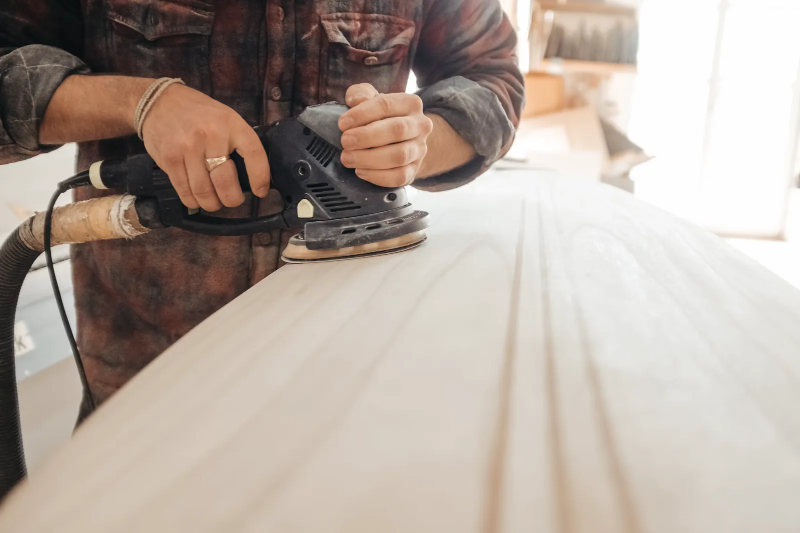

Forside / Ydelser
Ydelser
Det her laver vi for private i Sydsjælland, og det skal du tænke over, før vi går i gang.

Terrasser og hegn
En terrasse skal passe til huset, solen og haven. Vi hjælper med højde, placering og træsort, og vi bygger det hele fra punktfundament til sidste bræt.
- Terrasser i trykimprægneret fyr, lærk eller hårdttræ
- Trapper og trin ned til haven
- Læhegn, plankeværk og låger
- Overdækning af terrassen
Til en pris skal vi bruge terrassens omtrentlige mål og et billede af stedet.

Vinduer og døre
Vi skifter et enkelt vindue eller hele huset. De gamle tages ud, de nye sættes i lod og vater, og vi fuger og sætter lysninger og lister op indvendigt.
- Vinduer i træ, træ-alu eller plast
- Yder- og terrassedøre
- Ovenlysvinduer
- Nye fuger og indvendige lister
Vi måler selv op, før vinduerne bliver bestilt.

Tilbygninger og havestuer
En tilbygning har mange fag på én gang. Vi laver tømrerarbejdet og aftaler tiderne med murer, elektriker og VVS’er, så du kun har én at ringe til.
- Tilbygning og havestue
- Carport og udhus
- Nye vægge og ny planløsning
- Kviste og udnyttelse af tagetagen
Vi hjælper med at finde ud af, om opgaven kræver byggetilladelse.

Tag og efterisolering
Vi skifter undertag, lægter og tagbelægning og lægger mere isolering på loftet, så huset holder bedre på varmen.
- Nyt tag på parcelhus og sommerhus
- Efterisolering af loft
- Nye stern og vindskeder
- Reparation efter storm

Indvendigt snedkerarbejde
Skabe, reoler og trapper, der er bygget til rummet. Vi tilpasser til skæve vægge og gamle gulve.
- Indbyggede skabe og reoler
- Trapper og gelændere
- Trægulve og lofter
- Indvendige døre og karme
Ved du ikke, hvad opgaven kræver?
Skriv et par linjer om, hvad du gerne vil have lavet. Så foreslår vi, hvad der skal ske først.